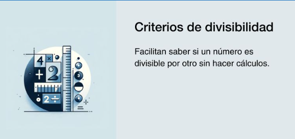

Los criterios de divisibilidad son pautas que nos permiten saber rápidamente si un número es divisible entre otro. Es decir, nos permiten saber si cuando los dividamos el resto de la división será cero o no.
Los criterios de divisibilidad son muy útiles
Nos ayudan a encontrar con facilidad los divisores de un número.
Nos sirven especialmente cuando tenemos que descomponer números en factores primos o saber si un número es primo o compuesto.
Nos dan pistas cuando tenemos que simplificar fracciones, entre muchas otras cosas…
Los criterios de divisibilidad son condiciones que debe cumplir un número para saber si es divisible entre otro sin dejar residuo.
Puntos clave
Los criterios de divisibilidad tienen aplicaciones prácticas en la vida diaria y en diferentes disciplinas.
Aplicar estos criterios ayuda en la simplificación de fracciones y resolución de problemas matemáticos.
Conocer los criterios de divisibilidad es esencial en la educación básica y matemática.
En otras palabras, los criterios de divisibilidad son características que indican que al dividir un número por otro, el resultado será un número entero.
Dicho de otro modo, son reglas que permiten saber si un número a es divisor de b sin necesidad de hacer cálculos.
Un divisor es un número que está contenido en otro de forma exacta un número determinado de veces.
Los criterios de divisibilidad del 2 al 10 son los siguientes:
Criterio de divisibilidad del 2: Todo número par, que termina en 0, 2, 4, 6 u 8, es divisible entre 2.
Criterio de divisibilidad del 3: Un número es divisible entre 3 si la suma de sus dígitos es igual a 3 o a un múltiplo de 3. Por ejemplo, 108. Si sumamos sus dígitos tenemos: 1+0+8=9. Por tanto, 108 es divisible entre 3.
Criterios de divisibilidad del 4: Un número es divisible entre 4 cuando sus últimos dos dígitos son 0 o un múltiplo de 4. Por ejemplo, 300 y 516 son divisibles entre 4 porque terminan en 00 y en 16, respectivamente, siendo este último un múltiplo de 4 (16=4*4).
Criterios de divisibilidad del 5: Un número es divisible entre 5 cuando su último dígito es un 5 o un 0.
Criterios de divisibilidad del 6: Un número debe cumplir con los criterios del 2 y del 3 para ser divisible entre 6. Por ejemplo, 1.440 termina en 0 y, a su vez, al sumar sus dígitos (1+4+4) obtenemos 9 que es un múltiplo de 3.
Criterios de divisibilidad del 7: Se debe multiplicar el último dígito por 2 y restarlo al número que conforman los demás dígitos. Esto, hasta que queda un número de solo un dígito. Si este es un 0 o un 7, el número es divisible entre 7.
Criterios de divisibilidad del ocho: Los últimos tres dígitos deben ser múltiplos de ocho o iguales a 0. Por ejemplo, 5.000 y 1.504 (504/8=63).
Criterios de divisibilidad del nueve: La suma de los dígitos debe ser un múltiplo de 9, por ejemplo, 1.575, pues si sumamos 1+5+7+5 obtenemos 18.
Criterios de divisibilidad del 10: Para que un número sea divisible entre diez solo debe terminar en 0.
Vamos a realizar el ejemplo de divisibilidad para el número 1.092. Así, tomamos 2 y lo multiplicamos por 2
2*2=4
109-4=105, tomo de nuevo el último dígito
5*2=10
10-10=0
Por tanto, el número es divisible entre 7 y lo comprobamos: 1.092/7=156
Igual podemos hacer con 2.401:
1*2=2
240-2=238, tomo de nuevo el último dígito
8*2=16
23-16=7
Por lo tanto, 2.401 es múltiplo de 7 y lo comprobamos: 2.401/7=343